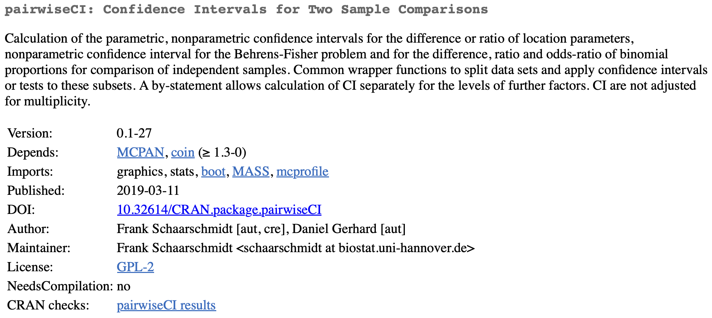
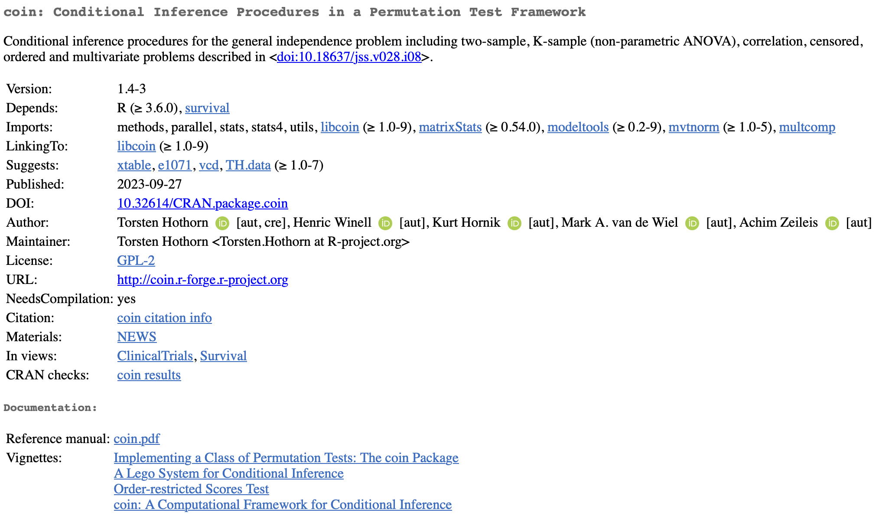
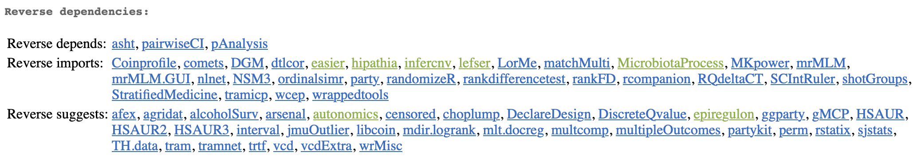
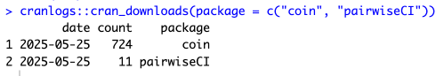

cranlogs::cran_downloads(package = c("coin", "pairwiseCI"))How to Choose an R Stats Package
When you want to implement statistical methodology in R and you don’t already know the package that does the method, it can be difficult to figure out the “best” package. Sometimes when you google a method, the top result is the package with wording that matches closest to what you typed into google, rather than the package that is “best” for the method. You don’t want to waste time looking deeply into a package only to find there is a more common and robust R package out there for the same method. So before you go down a rabbit hole on one package, it is worth checking a few packages. But, how do you “check” a package. This blog post will go through a worked example of comparing packages and a checklist of things to look at when comparing packages in the future.
Package Checklist
When looking at a package the first place to start is the CRAN index page. You can find this by googling CRAN and name of the package. From there you want to ask yourself the following questions:
Is this package being actively maintained?
Is the author known in the field?
- Is there more than one author?
Does the package have adequate documentation?
Are there references to external peer reviewed papers?
Is there a website / vignettes?
Is there a way to report bugs?
Can the packages handle different edge cases?
Does the package have a lot of dependencies / unusual dependencies?
Look at community adoption?
Using this checklist can help you quickly and consistently get a sense of a package before spending time looking into the code directly. Let’s see how this works in practice.
Worked Example: Wilcoxon Rank-Sum Test
For this, we are going to look at the Wilcoxon Rank-Sum test and the associated Hodges-Lehmann confidence interval. After googling a bit, I found three different packages that do a Wilcoxon Rank-Sum p-value and Hodges-Lehmann CI:
{stats} (part of base R)
{pairwiseCI}
{coin}
Great! I might be kind of done, because I tend to favor base R stats functions, but as I start looking into this, I found the {stats} function can’t handle ties if I want the exact methods. So I need to look into and compare the {pairwiseCI} and {coin} packages.
Tip
You often find that differences between packages and software show up when there are ties, missing data, and/or extreme values, so it is good to try to include these in the dataset you are using to compare.
Now I need to choose between {pairwaiseCI} and {coin}. I could just run the model in both and see if the results match, but that will be a lot of work. So before I get started I want to go through our checklist.
Let’s pull up the CRAN index pages for each of these packages and see if we can figure out which package we should use for this analysis.
{pairwiseCI}
Starting with {pairwiseCI}, the index page looks like this:

Now let’s go down the checklist to see if there are any red flags for this package.
Is this package being actively maintained?
The last update to this package was 2019-03-11, so over 6 years at the writing of this post. That indicates this probably isn’t being actively maintained.
Is the author known in the field?
Personally, I don’t know this author, but it looks like he does work in a biostatistics department at a university, so that is a really good sign. When you are looking at the author you don’t need to go super in-depth, but if you don’t know who they are it can be good to check their qualifications.
Is there more than one author?
Yes, it looks like there are two authors here. This can be good to check because it can mean the burden of maintaining the package is shared and the documentation has potentially been peer reviewed.
Does the package have adequate documentation?
This can be hard to determine from just this index page, but the sub-questions can help here.
Are there references to external peer reviewed papers?
On the index there are no references, but there might be some references on the function level. Really it just means they haven’t published a paper about this package.
Is there a website / Vignettes?
There isn’t a website or vingettes. This means all the documenation will be limited to just the functions, which can be harder to understand.
Is there a way to report bugs?
There doesn’t appear to be a standard way to report bugs. If this package was on github or something similar, I would be able to check any issues there to see if others had similar problems or if the issue was caused by user error and has a quick fix.
Can the packages handle different edge cases?
The description doesn’t say anything about handling special cases. But, I did find this package because it can handle ties in the exact case.
Does the package have a lot of dependencies / unusual dependencies?
It looks like this package only has two dependencies, {MCPAN} and, interestingly, {coin}, the other package we are looking at.
Okay, having gone through all but the final question, I would say I feel not amazing about the package, but if it was my only option I would still try to use it. The author gives me confidence in the package, but other things like documentation and last update date, make me a bit nervous about this package.
{coin}
Now on to {coin} with the same questions. The index page is as follows:

Is this package being actively maintained?
The last update to this package was 2023-09-27, so more recently than {pairwiseCI}.
Is the author known in the field?
Again, I don’t know the author, but he has an R-project.org email, which indicates he is very involved in the R ecosystem and is a very good sign.
Is there more than one author?
Yes, there are 5 different authors, so lots of eyes on bugs and documentation.
Does the package have adequate documentation?
Again, this can be hard to determine from just this index page, but the sub-questions can help here.
Are there references to external peer reviewed papers?
Yes, there is a peer reviewed paper in the description of this package.
Is there a website / Vignettes?
While there isn’t a website here, there are four different vignettes.
Is there a way to report bugs?
Like with the other package, there doesn’t appear to be a standard way to report bugs.
Can the packages handle different edge cases?
Same as above. It doesn’t directly said it can handle our edge case, but I know it can.
Does the package have a lot of dependencies / unusual dependencies?
While this package has more dependencies, all the dependencies are very standard and do not raise any red flags for me
Having gone through most the questions, I am fairly confident in saying I want to use {coin} to investigate this method rather than {pairwiseCI}. For almost all the questions {coin} looks slightly better than {pairwiseCI} and really just has a larger accumulation of evidence of quality. But, I haven’t answered the last question in my checklist for either these packages. What about community adoption? It can be a bit hard to look at directly, but I tend to use a few different ways.
First, staying on the CRAN index page for the package, I look at the Reverse Dependencies. This section gets split into three parts, “Reverse depends”, “Reverse imports”, and “Reverse suggests” which explains how the other packages are using the package. In terms of community adoption, it doesn’t matter if other packages are depending, importing or suggesting the package, all that matters is they are using it. Note: This section only appears if other packages on CRAN use the package.
For these two packages, only {coin} has this section and we can see there are many other packages that use {coin}.

The next thing I will check is the number of downloads. This can easily be done with the following bit of code:

And you can see {coin} is much more popular than {pairwiseCI}.
So with all of this information, I think starting with {coin} is going to be the best use of my time.
When looking at the number of downloads, you can look over a longer period like over the last month (by using the when parameter) or you can look between specific dates (by using the from and to parameters). But, it will give you the download numbers for each day, which you will need to summaries. These day-by-day numbers can be very helpful to look at trends, especially when there is a new package that is getting rapidly adopted.
The checklist isn’t intended to replace a full review of the package for an GxP workflows. But, when just trying to decide which package to look into for a particular stats method it can be helpful.
In summary, selecting the appropriate R package for statistical analyses is hard. Google, isn’t perfect and so it worth finding a few packages and going through this checklist. By taking a few minutes to consider factors like maintenance, documentation, and community adoption can save you time in the long run.